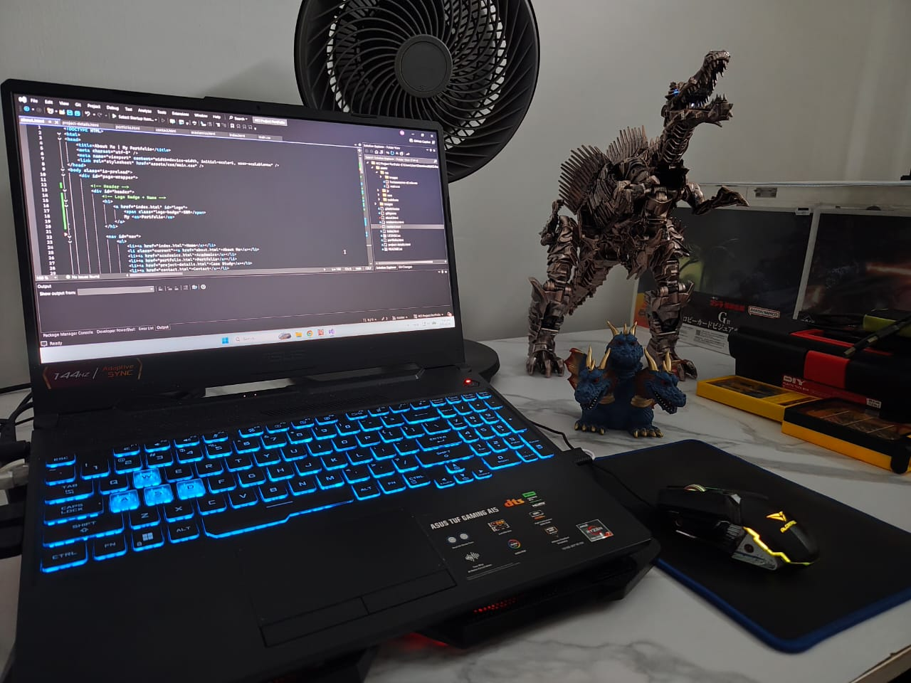

About Me
Computing & IT Student | Bridging Logic, Precision, and Architecture

I am a Computing and Information Technology student based in Malaysia, with a strong focus on applied mathematics, machine learning, and intelligent systems. My academic journey is driven by a passion for solving complex logical problems and building software that bridges the gap between raw data and usable human interfaces. Whether I am developing fuzzy logic systems or mapping dataset features for predictive models, I thrive in environments that require rigorous analytical thinking.
Professional Experience & Leadership
Industry Internships: I have completed two separate 3-month internships that solidified my practical IT skills. As a computer repair assistant, I gained hands-on experience diagnosing and repairing hardware and software system failures. Subsequently, I interned as a website designer, where I was tasked with wireframing and designing an e-commerce storefront layout for trading card games.
Extracurriculars & Robotics: Beyond academics, I enjoy practical engineering challenges, such as building and programming a functional solar-powered robot. During my diploma studies at Politeknik, I also served as a Facilitator for the Japanese Club. In this role, I organized campus tours, welcomed exchange students, and helped them integrate into the school environment.
The Technical Mindset: Beyond the Classroom
I firmly believe that the best problem-solving skills are cultivated through multidisciplinary interests. The precision required in software engineering is directly mirrored in my personal pursuits:
Precision & Assembly
As an active collector and builder of Gunpla, Lego sets, Transformers, and Kaiju figures, I specialize in complex assembly and meticulous display maintenance. This extreme patience translates directly to writing clean, modular code and structuring complex architectures without losing sight of the smallest details.
Focus & Discipline
My experience with rifle training in my middle school Pasukan Cadet Polis has instilled a deep sense of discipline, absolute focus, and the ability to operate with precision under pressure—essential traits when debugging critical system failures or meeting strict project deadlines.
Troubleshooting
I enjoy deep-dive technical troubleshooting, frequently modifying PC game files for script-heavy environments like Fallout: New Vegas and Mount & Blade II. This involves deploying script extenders and optimizing memory allocation to ensure high-performance runtime environments.
Looking Forward
I am constantly expanding my technical stack and collaborating with university peers on system design projects. In the upcoming academic term, I will be deepening my expertise by taking advanced coursework in Neural Networks, Digital Image Processing, and Software Engineering. I am eager to apply these sophisticated computing concepts to practical, real-world development environments.